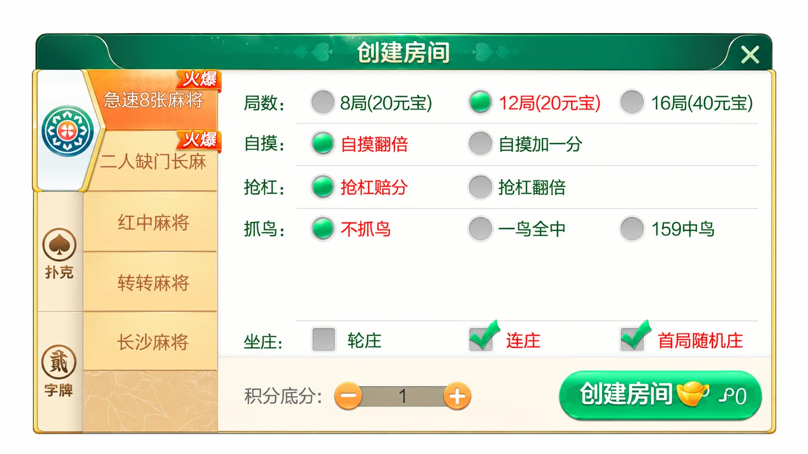
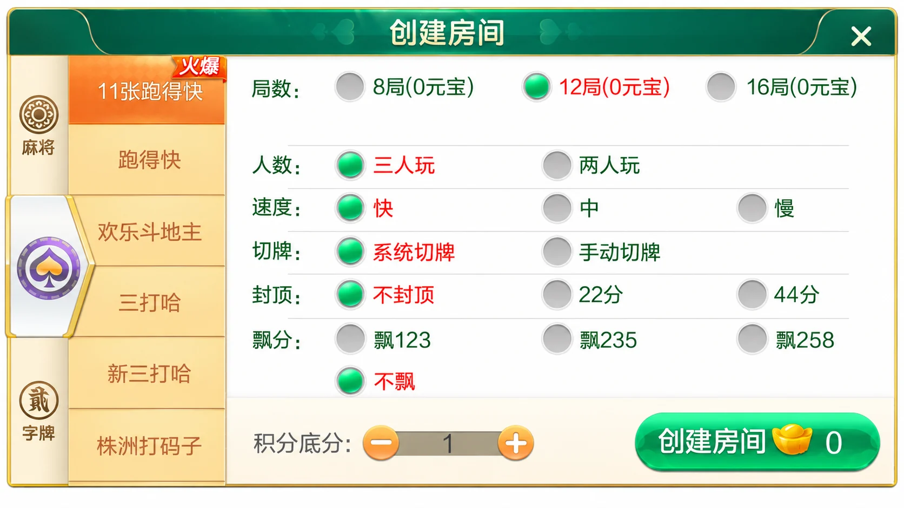

七星系列 · 地区界面与技术笔记
七星株洲：多类别房间配置与草稿校验
从麻将、扑克到字牌，观察地区玩法目录如何组织不同的房间配置。
株洲版本的玩法目录
这一地区版本将麻将、扑克和字牌放在同一创建房间窗口中。麻将清单包括急速8张麻将、二人缺门长麻、红中麻将、转转麻将、长沙麻将；扑克清单包括11张跑得快、跑得快、欢乐斗地主、三打哈、新三打哈、株洲打码子、株洲牛十别；字牌列出株洲碰胡。
介绍中的“12个游戏”与逐项列出的13个名称并不一致，因此这里保留具体名单，不把宣传数量当成已验证的安装数量。株洲碰胡与株洲牛十别的详细判定规则没有展示，不能用其他地区的规则代替。
两类创建房间面板
麻将画面提供局数、自摸、抢杠、抓鸟和坐庄选项。扑克画面则出现人数、速度、切牌、封顶与飘分。两种面板共用侧栏，却有不同字段，说明前端表单不宜用一份无差别参数覆盖所有玩法。




配图为第三方界面的AI整理局部，保留可见规则选项，供界面分析使用；不代表原始像素截图或运行测试。图中的元宝和积分仅按界面文字描述，未验证其获取、兑换或结算机制。
从分类切换到参数校验
实现类似配置界面时，可把“地区、类别、玩法”作为三级键。切换玩法后加载该玩法的字段白名单，清空不适用的旧值。例如麻将中的抓鸟设置不能跟随草稿进入扑克表单。人数变化后也应重新检查选项，而不是沿用上一份提交数据。
下面是独立编写的表单校验示例，只演示扑克画面中四个可见选项的值域，不复现七星工程、完整规则或服务端接口。未知字段直接拒绝，字符串数字不自动转换，便于在提交前发现配置错误。
export function validateDraft(d) {
if (!d || typeof d !== 'object' || Array.isArray(d)) return false;
const fields = ['rounds', 'players', 'speed', 'cut'];
if (Object.keys(d).some(k => !fields.includes(k))) return false;
return [8, 12, 16].includes(d.rounds)
&& [2, 3].includes(d.players)
&& ['fast', 'normal', 'slow'].includes(d.speed)
&& ['system', 'manual'].includes(d.cut);
}
查看独立示例。已执行10项断言，覆盖合法配置、非法局数、人数、速度、切牌值、额外字段与空输入。服务端仍需按自己的规则重新校验，不能只信任客户端。
版本核验范围
当前核查对象是公开介绍与界面。未取得或运行游戏工程，因此不推断客户端引擎、数据库、通信协议和双端构建结果。开发类似房间系统时，应分别测试分类切换、草稿恢复、重复点击、提交失败后重试以及服务端返回的字段错误。